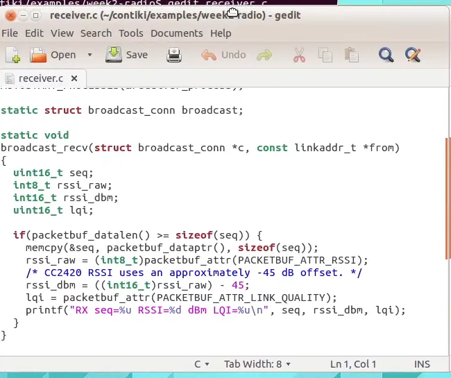
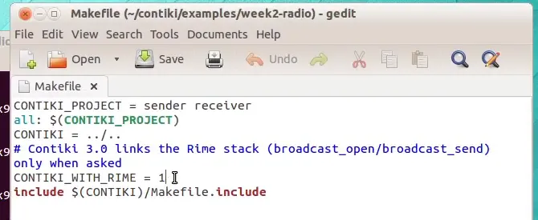
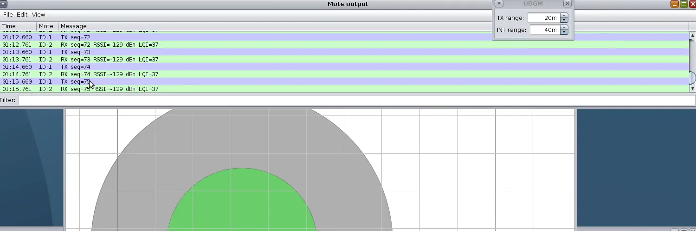
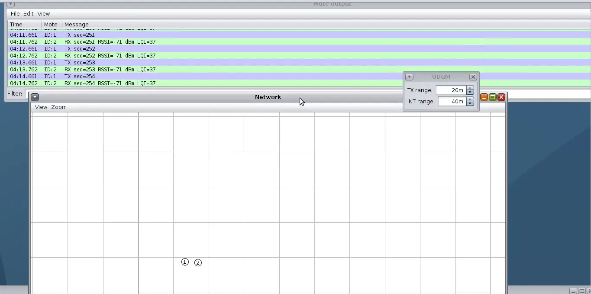
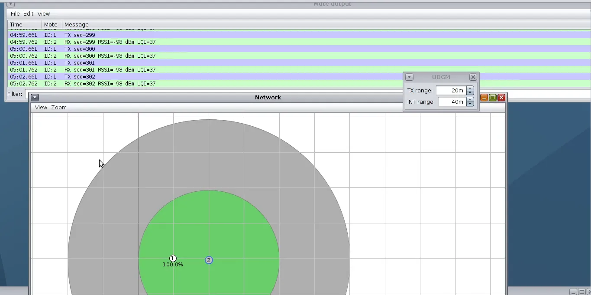
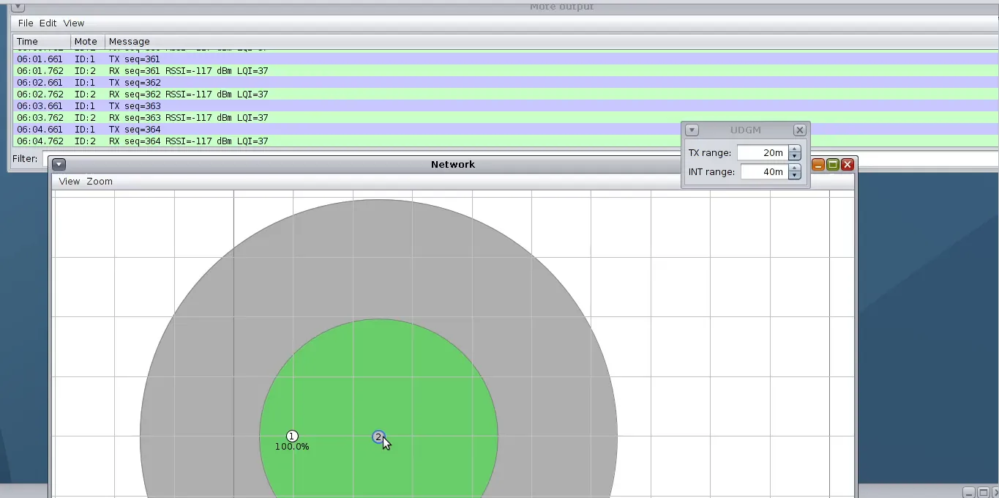
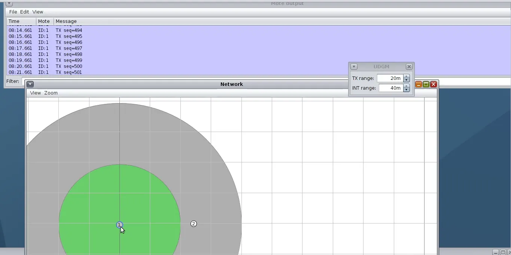
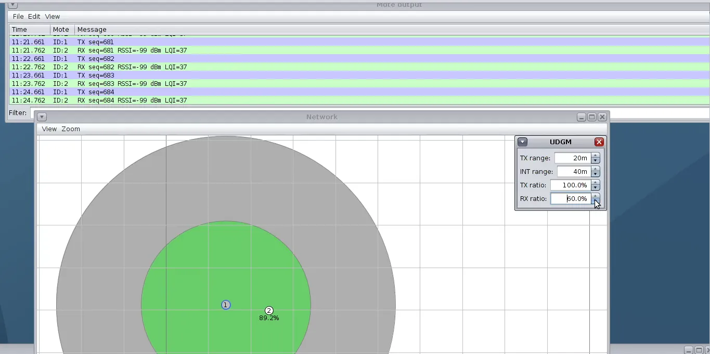

CSE 427 · Wireless Sensor Networks
Yahya Efe Kuruçay · Akdeniz University, Computer Engineering · lab recorded 4 October 2026
The week 2 Cooja lab: one Sky sender broadcasts a numbered packet every second, one Sky receiver logs the RSSI and LQI of each packet it gets. The receiver is moved to different distances, dragged across the range boundary, and the radio medium’s RX success ratio is reduced, to see how RSSI, LQI and the packet reception ratio (PRR) behave and why they are not interchangeable.
| Item | Value |
|---|---|
| Environment | Instant Contiki 3.0 in VMware Workstation, Cooja with MSPSim (same as week 1) |
| Motes | 2 Sky motes: mote 1 = sender, mote 2 = receiver |
| Traffic | Rime broadcast on channel 129, one packet per second, payload = 16-bit sequence number |
| Radio medium | UDGM: Distance Loss, TX range 20 m, interference range 40 m |
| Simulation speed | 100 % (real time) |
sender.c increments a sequence number every second, copies it into the packet buffer, broadcasts it and prints TX seq=N. receiver.c opens the same Rime channel and, in the receive callback, prints the sequence number with the packet’s RSSI and LQI attributes:

The Makefile from the lab notes did not build: the linker reported undefined reference to broadcast_send. Contiki 3.0 links the Rime stack only when asked, so one line was added (Contiki’s own examples/rime/Makefile has it too):
CONTIKI_WITH_RIME = 1
With the receiver inside the range, every TX seq=N of mote 1 is followed by RX seq=N RSSI=… LQI=37 on mote 2. While the receiver was still outside the green circle no RX lines appeared at all.

The receiver was placed at three distances from the sender. The 10 m background grid gives the scale; the green circle is the 20 m transmission range.



RSSI falls with distance, but at each position every packet arrives and LQI stays at 37.
Dragging the receiver outside the green circle while the simulation runs: the sender keeps printing TX, the receiver goes silent. 15 consecutive packets (sequence numbers 493–507) were sent but never received. Back inside, reception resumes immediately.

The UDGM RX success ratio was set to 60 % (the default is 100 %) with the receiver about 10 m from the sender (half the range). Cooja then shows a reception probability of 89.2 % next to the receiver, not 60 %.

PRR counted from the Mote output over sequence numbers 700–719: 20 sent, 20 received, PRR = 1.00. In fact none of the 70 packets sent at this setting (680–749) was lost.
| Experiment | Distance | Sent | Received | RSSI printed | RSSI real | LQI |
|---|---|---|---|---|---|---|
| B close | ≈ 4 m | 20 | 20 | −71 dBm | −26 dBm | 37 |
| B medium | ≈ 10 m | 20 | 20 | −98 dBm | −53 dBm | 37 |
| B far | ≈ 15 m | 20 | 20 | −117 dBm | −72 dBm | 37 |
| C outside range | > 20 m | 15 | 0 | — | — | — |
| D RX ratio 60 % | ≈ 10 m | 20 | 20 | −99 dBm | −54 dBm | 37 |
Counts are taken from the Mote output in the recording. Distances are derived from the RSSI with the UDGM model below.
SS_STRONG and SS_WEAK in Cooja’s AbstractRadioMedium).cc2420_last_rssi = footer[0] + RSSI_OFFSET in dev/cc2420/cc2420.c). Adding 45 back gives −26, −53 and −72 dBm, which match the model for about 4, 10 and 15 m.UDGM.java the reception probability is P = 1 − (d / range)² × (1 − RX ratio). At 10 m of a 20 m range that is 1 − 0.25 × 0.40 = 0.90, the 89.2 % Cooja displayed. The configured 60 % is reached only at the edge of the range; next to the sender it is almost 100 %.sender.c receiver.c Makefile Week2-Radio.csc
Put the three source files in ~/contiki/examples/week2-radio/. The simulation file opens in Cooja with File → Open simulation.